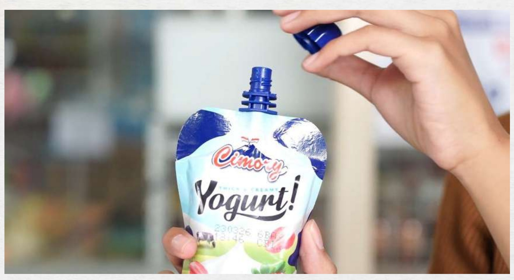

Iklan Televisi (TVC)TVC — Cimory Squeeze Yogurt
Mengoordinasikan alur produksi untuk proyek video mahasiswa bertema Cimory Squeeze Yogurt, mulai dari riset pra-produksi, produksi, hingga pasca-produksi. Peran: koordinasi produksi di seluruh tiga tahap.
Tonton di YouTube